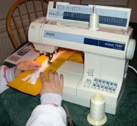
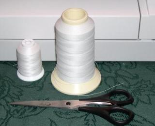
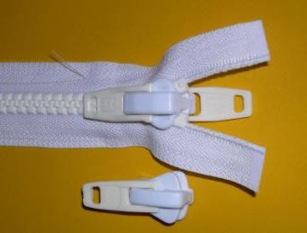
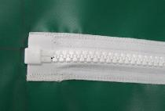
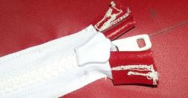

| Zipper Assembly - Sewing | Menu Last Page Next Page | |
|

The only sewing required is for the deck zipper. It's sewn on a 5" wide panel of PVC and then glued to the deck. Two rows of stitches are sewn on both sides of the zipper.
|

V-46 and V-92 polyester thread used for sewing the zipper. Though I've used V-46, it may be a little light for the job. V-92 is about as heavy a thread as can be used on a home machine. Excellent Information about the correct needle and thread combination can be found at the LINK below.
|

A marine grade plastic YKK #10 zipper is used. This zipper is quite large and easily up to the rigors of folding kayaks use.
The original zipper from Seattle Fabrics (See Contacts Page) came with a double slider. It was replaced with a single slider before sewing. The single slider is not as thick, and slides more easily along the deckridge. |
|  |
http://www.sailrite.com/techtalk/whichthread.htm
|
 |